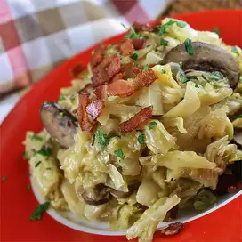

cabbage

Southern Fried Cabbage with Bacon, Mushrooms, and Onions recipes
- 1 pound bacon
- 1 large head cabbage,chopped
- 1 large onion, chopped
- 1 (8 ounce) package sliced fresh mushrooms
- salt and ground black pepper to taste
Steps
- Place bacon in a large skillet and cook over medium-high heat, turning occasionally, until evenly browned, about 10 minutes. Drain the bacon slices on paper towels; crumble when cooled. Drain all but 3 tablespoons of bacon drippings from skillet.
- Cook and stir cabbage, onion, and mushrooms in the remaining bacon drippings until tender and lightly browned, about 20 minutes. Fold bacon into cabbage mixture. Season with salt and black pepper.